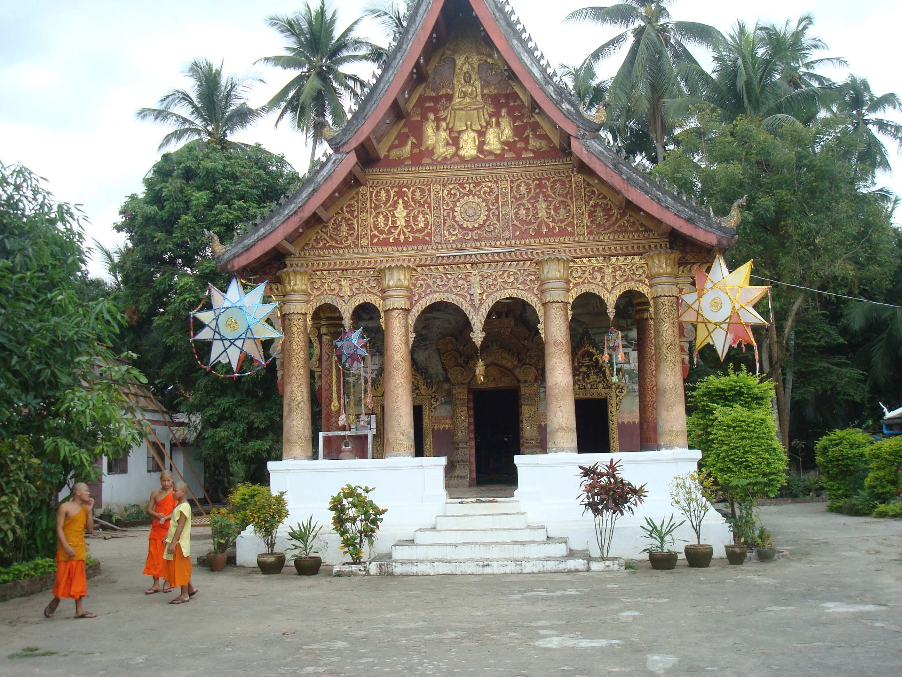

"And so here I am Laos! After many useless paperwork filled, here I am going down the river. The river par excellence around here, quiet and obscure like an amphibian, like one of those millennial reptile that crawls against time and becomes younger while the others are getting older. His scales are his waves, the head and the tail at the moment are still not recognisable and maybe they will never be. Overnight in the jungle, even if just for a night, it is an incredible experience. The mere thought on my provvisory ubication, brings the mind out of every border, between fiction and reality. Despite crowds of travellers (I could easily call them tourists even if people that take themselves this far deserve to be better called), this place succeeds in keeping its peculiar identity. Time has stopped, time is fiction. I restart my descent down on the river Mekong". (MEKONG RIVER 19/10/13)
"Between those mountain I home. The only thing that does not match is the permanent footprint that religion gives to those places. Changing colours, ways of living and habits, I could easily say that I made it home. If it wasn't for the peculiar attention that I have to pay to food and to everything that comes into contact with my mouth, I could get used to the idea that my trip is coming to an end. People say hello and as a result I do that too which is a good news. I also say hello to the river for the moment and the first taste of Laos is the one that stimulates the appetite". (LUANG PRABANG 19/11/13)

"I am in a middle-earth that does not stand out from the other. I am far from the sea and I plunge into cold waters. I taste bread again, because of the strong french influence that affects the local cuisine here in Indochina. Bread and water: everything they promise you if you try to go away from the path and cut through the forest. Bread and water for those stupid western people that come here thinking to be at home. Unless you pay: in that case a compromise can always be found and suddendly that bread finds a new flavour". (VANG VIENG 22/11/13)
"Pause. Full stop. I start again. The capital city syndrome infects me one more time. I have to pull the brake, I have to sit and wait, patiently and wait until the nature follows its course. Insomnia is fascinating and so it is the hurricane. Hurricane destroys everything that nature does not want, everything that has no reason to be there. Insomnia is pure fiction of some random fortune teller and since it is now gone, there is no reason for me to be there anymore. Vientiane I have forsaken you and now I can keep moving south". (VIENTIANE 24/11/13)
"Between all the journeys of hope, this is the most atrocious one. It's worth to take the effort to describe moment by moment what crossing Laos on one of the so-called "unrecommended-bus" means. Thakhet's sunsets and its friendliness and hospitality take a back seat. The clock is paused and says "9.45 am". Sun is already up or maybe never went down and despite all the whiskey I believe that nobody here around was able to close an eye in the last twelve hours. I clean my face with an handkerchief that in a matter of seconds changes its colour. The dust is everywhere, I feel it between my teeth. The potholes on the road are yet another punishment and this page proves it. The next one probably will talk about something else but for the time being this is my present. My future is a destination but maybe I will never make it". (THAKHET 26/11/13)

"The propulsion system is about to end, the push has been given already a while ago and consequently the speed starts to diminish. I could spend my time asking myself if the timeframe was appropriate but I prefer to cycle around the island and avoid the potholes and to pay duty in order to spend a quiet afternoon. Maybe that's exactly the thing that annoys me the most, more than the push that is about to end, more than to see the finish line, more than the creatures that crawl under the skin and more than the ineffable. And so I say goodbye to you Don Det, while saying your name. The streets are tortuous, the trips are more intense and in less than an hour the border must be crossed". (SI PHAN DON (DON DET) 02/12/13)